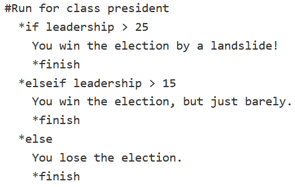

class: center, middle .title[Writing interactive fiction<br/>in Ink] <br/><br/> .subtitle[grigore.burloiu@unatc.ro <br/>rvirmoors.github.io] <br/><br/><br/><br/><br/><br/> .date[Feb 2022] <br/><br/><br/> .note[Created with [Liminal](https://github.com/jonathanlilly/liminal) using [Remark.js](http://remarkjs.com/) + [Markdown](https://github.com/adam-p/markdown-here/wiki/Markdown-Cheatsheet) + [KaTeX](https://katex.org)] ??? Author: Grigore Burloiu, UNATC --- name: toc class: left # ★ Table of Contents ★ <!-- omit in toc --> 1. [PART ONE: IF & Ink](#part-one-if--ink) 2. [Concepts](#concepts) 3. [Ink techniques](#ink-techniques) 4. [PART TWO: Storylets](#part-two-storylets) 5. [Going forward](#going-forward) <!-- Comment out the next slide if you don't want the Table of Contents link --> --- layout: true .toc[[★](#toc)] --- name: part-one-if--ink class: left # PART ONE: IF & Ink interactive fiction, what & why? -- --- ## Ink is... *[a narrative scripting language for games](https://www.inklestudios.com/ink/)* open source created and maintained by [Inkle Studios](https://www.inklestudios.com/) can be integrated into - [standalone](https://www.inklestudios.com/overboard/) games, - [browser](https://ig.ft.com/uber-game/) games, - or pure interactive [text](https://rvirmoors.github.io/ink/learning-ink/index.html) using [Inky](https://github.com/inkle/inky/releases) --- ## Alternatives to Ink [Ren'Py](https://www.renpy.org/) | choice | <img width="50%" src="https://www.renpy.org/static/featured/aloc.png"> | [Twine](https://twinery.org/) | choice | <img width="150%" src="https://twinery.org/homepage/img/twine1-zoomedin-thumb.png"> -|-|-|-|- [Texture](https://texturewriter.com/) | choice | <img width="50%" src="https://texturewriter.com/img/materials/flags-example.gif"> [ChoiceScript](https://www.choiceofgames.com/make-your-own-games/choicescript-intro/) | choice |  |[Inform](http://inform7.com/index.html) | parser | <img width="250%" src="../attachments/if/inform.png"> <br/><br/> - ["Another Interactive Fiction Engine List"](https://docs.google.com/spreadsheets/d/1-B1yKIateTpwTdRNT9W_ZjDzC6XnFpHXrcZ4nr_x7LQ/edit#gid=0) --- name: concepts # Concepts Ink-specific general programming --- ## Ink terms *knots* - `=== london ===` -- *diverts* - `-> london` -- choices ``` + [Go to London.] -> london + We went to Berlin. -> berlin ``` - `+` is permanent - `*` disappears once chosen -- *glue* - `<>` --- ## Programming concepts `// comments` -- program state ~ variables -- variable types - boolean `true / false` - numbers - text ~ *strings* -- assigning a value `=` -- conditionals `if` `else` -- logical operators - `not` - `and` - `or` -- math `+ - * /` ... --- name: ink-techniques # Ink techniques conditional content using variables *weaving* --- ## Conditionals in the text ``` { london: I had already been to London. } ``` -- in choices ``` + {london} [Go to Berlin.] -> berlin + {not london} [Go to London.] -> london ``` -- complex conditions ``` * {london and berlin} I've been everywhere! -> END ``` -- - `london` and `berlin` are implicit variables, - being *incremented* every time you visit the respective knot ``` { london == 1: I had only been to London once before. } ``` -- **YOUR TURN!** write a mini-story w/ a condition check --- ## User variables define & assign ``` VAR player_name = "Stan" VAR mood = 1 ``` -- use in text ``` "People call me {player_name}." ``` -- modify ``` === change_name === ~ player_name = "John Paul II" ~ mood++ The archbishop declared: "From now on, you shall be {player_name}." ``` -- conditionals (if/else) ``` { mood > 0: I was feeling pretty good that day. - else: I wasn't happy about how things were going. } ``` --- ## EXERCISE (for next week) Write a short (5-10 knots) IF piece, adapting an existing story into a non-linear structure. - try different patterns, see what works --- name: part-two-storylets # PART TWO: Storylets *filtered-card-deck* / *quality-based* / *resource narratives* - *My story is made of pieces of content. How do I choose which piece to show the player next?* -- - **Content** - **Prerequisites**, when the content can play - **Effect on state** of the world, after the content has been played Example: *"The princess escapes the tower."* --- ## Storylets - **Content**: The princess escapes the tower. - **Prerequisites**: - tower is in story; princess is in story; princess is in the tower - **Effect on state**: - Tower is no longer in the story; princess is no longer in the tower -- - **Content**: The princess escapes the tower. - **Prerequisites**: - `tower == true and` - `princess == true and` - `princess_in_tower == true` - **Effect on state**: - `tower = false;` - `princess_in_tower = false` -- - [Storylets: You Want Them](https://emshort.blog/2019/11/29/storylets-you-want-them/) (Emily Short) - [Workshop on storylet-based narrative design](https://www.youtube.com/watch?v=0zDXcVc5zv0) (Emily Short) --- ## Storylets in Ink [basic example](https://gist.github.com/JoshuaGrams/073e02468a5fe3addb8cdbfdc6f199d3) - Joshua Grams -- ``` VAR princess_in_tower = false -> storylets == storylets == + {not tower} [Go to tower.] -> tower + {tower and princess_in_tower} [Look up at the window.] -> princess_escapes == tower == ~ princess_in_tower = true You decide to visit the forbidden tower. -> storylets == princess_escapes == ~ princess_in_tower = false You lock eyes with the princess and she runs to you. -> END ``` -- [Ink extension](https://elliotherriman.itch.io/ink-storylets) - Elliot Herriman --- name: going-forward # Going forward 1. Write, mess around! Use what you've seen so far. 2. Read the guides linked on the next slide. See chapter on [weaving](https://github.com/inkle/ink/blob/master/Documentation/WritingWithInk.md#part-2-weave). 3. Play some IF games. IFComp is a good place to start. 4. (re)write your story. -- <br/><br/><br/><br/><br/><br/> not a linear sequence! --- ## Links [Writing web-based interactive fiction with ink](https://www.inklestudios.com/ink/web-tutorial/) beginner guide [Writing with Ink](https://github.com/inkle/ink/blob/master/Documentation/WritingWithInk.md) full guide [Unofficial Cookbook](https://videlais.github.io/Unofficial-Ink-Cookbook/) by [Dan Cox](https://videlais.com/ink-tutorials/) [Owlbook](https://github.com/Liance/Ink-Owlbook) tips and tricks -- [Emily Short](https://emshort.blog/)'s Interactive Storytelling [Standard Patterns in Choice-Based Games](https://heterogenoustasks.wordpress.com/2015/01/26/standard-patterns-in-choice-based-games/) - Sam Kabo Ashwell [Paul Nelson](https://thestoryelement.wordpress.com/category/interactive-storytelling/) [IFComp](https://ifcomp.org/) [50 Years of Text Games](https://if50.substack.com/) - Aaron A. Reed --- class: center ## Thanks! <br/><br/><br/><br/><br/><br/> grigore.burloiu@unatc.ro